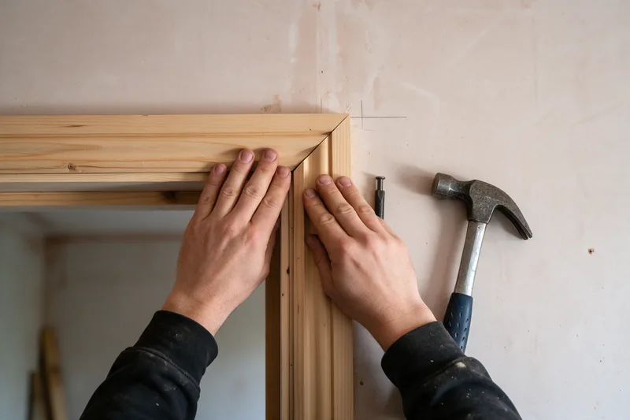
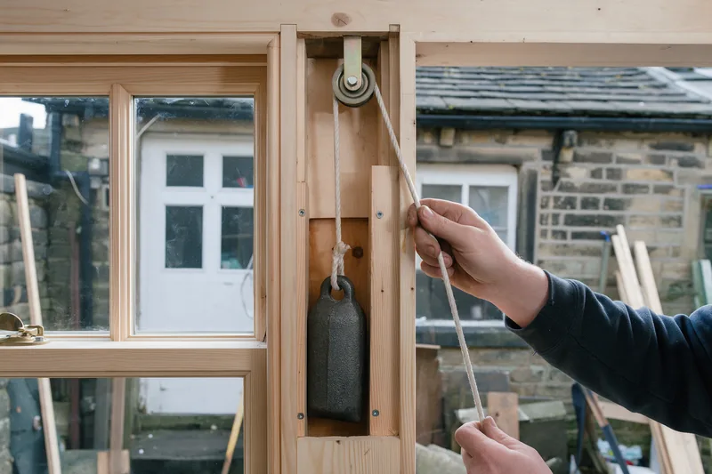
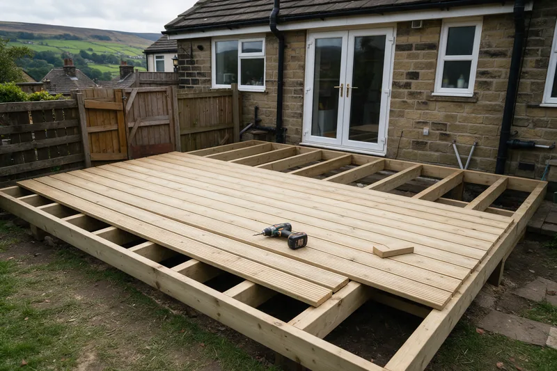

Our work
Sixteen sample jobs.
Grainhurst is a demo, so none of these happened. They are the sort of jobs a joiner round here would actually have on over a month or two, with pictures generated for this site rather than taken on a job.
16 jobs
 Generated photoHanging the first of sixRastrick · Sample
Generated photoHanging the first of sixRastrick · Sample Generated photoRecess cut by handHebden Bridge · Sample
Generated photoRecess cut by handHebden Bridge · Sample Generated photoA fire door into an old liningTodmorden · Sample
Generated photoA fire door into an old liningTodmorden · Sample Generated photoEasing one that had swollenMytholmroyd · Sample
Generated photoEasing one that had swollenMytholmroyd · Sample Generated photoNew spindles going inRastrick · Sample
Generated photoNew spindles going inRastrick · Sample Generated photoHandrail into the newelRipponden · Sample
Generated photoHandrail into the newelRipponden · Sample Generated photoAn alcove that was not squareHebden Bridge · Sample
Generated photoAn alcove that was not squareHebden Bridge · Sample Generated photoUnder the stairs, used at lastTodmorden · Sample
Generated photoUnder the stairs, used at lastTodmorden · Sample Generated photoScribed to a wall that bowsRipponden · Sample
Generated photoScribed to a wall that bowsRipponden · Sample Generated photoScribed, not mitred and filledRastrick · Sample
Generated photoScribed, not mitred and filledRastrick · Sample
Generated photoTight at the headMytholmroyd · Sample Generated photoA floor made flat and quietHebden Bridge · Sample
Generated photoA floor made flat and quietHebden Bridge · Sample Generated photoA sill spliced rather than skippedTodmorden · Sample
Generated photoA sill spliced rather than skippedTodmorden · Sample
Generated photoCords and weights back to workHebden Bridge · Sample
Generated photoFramed so the water runs offRipponden · Sample Generated photoA gate that clears the flagsRastrick · Sample
Generated photoA gate that clears the flagsRastrick · SampleFilter them, or tap one for the detail. Every one is a made up sample.
What you are looking at
Why a real joiner should photograph the middle of the job.
Every joiner's website shows the same picture: a finished wardrobe, doors shut, taken on a phone at the end of the last day. They all look the same, and not one of them tells you whether the firm can scribe a panel to a wall that bows.
The pictures that win work come from the middle. The tapered filler marked off the wall with a pencil and a block. The hinge recess chopped by hand. The underside of a staircase with the old wedges out on the floor. A rotten sill cut back to clean timber with the new piece offered in dry. A floor sheeted over in plywood before anybody laid anything on it. On a real site this page would be your own photographs of exactly that, with one line each on what it turned out to be, and it would be the page that beats the firm who only photographs the last hour.
 Generated photo
Generated photoGenerated for this demo.
Want somebody to look at yours?
Tell us the job and your postcode and we will come and measure it properly.